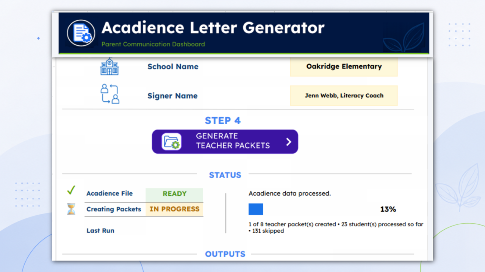
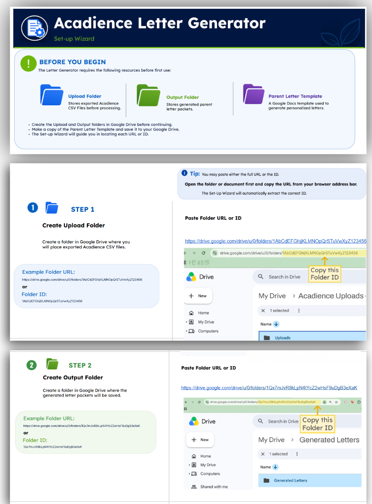
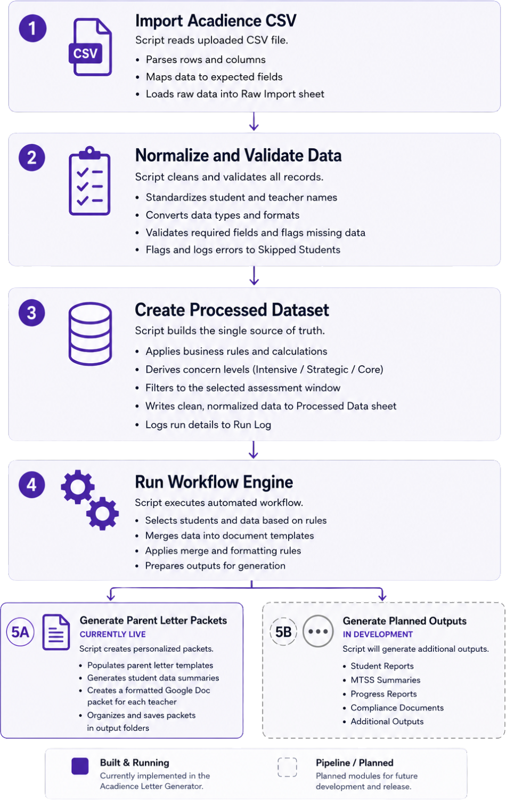

Product Case Study
Building an assessment workflow engine.
Project Snapshot
I build systems that reduce complexity, eliminate repetitive work, and give people more time for the work that requires human judgment.
Three times each year, benchmark assessments generated hundreds of student results that needed to be translated into teacher-specific parent communication packets. The process required extensive manual filtering, document preparation, formatting, and organization before anything could be shared with families.
The solution wasn’t another spreadsheet. It was designing the spreadsheet to behave like an application.
A teacher exports their benchmark data, drops the file in a folder, and clicks one button. The system imports the newest file, normalizes it, filters to the selected assessment window, groups students by teacher, and generates a formatted Google Doc packet for each — automatically applying the correct window, template, and formatting every time.

Numbered steps carry the user from first-time setup through generation.
Status indicators and a progress bar show what’s done and what’s left, in real time.
The tool confirms every required resource exists before it will run.
Rather than requiring users to edit hidden configuration values or documentation, I designed a guided setup wizard that walks them through first-time configuration with visual instructions — and validates the required resources before the application can be used.

The system is designed as a pipeline, not a single script. Raw data is imported, cleaned, and validated, then written to one processed dataset that acts as a single source of truth. Only then does the workflow engine run — selecting students, merging data into templates, and generating a formatted packet for each teacher.

The split ending is deliberate. Parent-letter packets are live today; additional outputs — student reports, MTSS summaries, compliance documents — are planned modules that hang off the same engine rather than rebuilds of it. New requirements become an output-layer change, not a new project.
Google Apps Script caps a single execution at roughly six minutes. A full building’s worth of letters takes longer than that — so a naive version would simply stop partway through.
Workspace accounts get a longer window, but I built for the shorter limit on purpose — so the tool runs anywhere, on any account, without depending on a particular tier. Then I designed around the constraint rather than against it.
The workflow processes as many teacher packets as it can within a safe time budget, then automatically schedules its own continuation and resumes where it left off — until every packet is complete. Progress is tracked in the data itself, so the system always knows what’s done and what remains, which also means it can recover if anything interrupts it mid-run.
This turned the experience from “keep clicking until it finishes” into “click once and walk away.”
The tool reports each student’s benchmark results — it doesn’t interpret them or recommend what to do next. Surfacing the data is its job; deciding what it means for a child stays with educators. That boundary was deliberate, and it’s the line future modules will hold to as well.
The time saved is the obvious win. The bigger one is reliability: the mistakes that used to be easy to make — the wrong window, a broken merge field, a bad file format — simply can’t happen anymore. Every packet comes out correct and consistent.
A solution that only one person can run isn’t really a solution.
One that other people can pick up, understand, and adopt on their own is. Early on, I documented a simpler spreadsheet-and-mail-merge version of the process, and other schools began running their own copies of it — the approach spread well beyond my building.
The district has since merged the reading and math specialist roles into a single position — one person now carries the workload two people used to share. A tool that turns days of manual work into one click is exactly the kind of leverage that makes do-more-with-less survivable.
Administrator reports, intervention documentation, and compliance notifications — on the same engine, without touching the core.
A continuation mechanism fully resilient to slow network conditions.
The district is moving away from one assessment subject — a modular output-layer change, not a rebuild.
The goal was a polished, documented version that solves a real problem well — not the largest possible application.
AI accelerated the implementation; it didn’t replace the thinking. The problem definition, the architecture, the tradeoffs, and the testing were mine — and knowing how to direct AI well, and being honest about it, is itself a current, relevant skill.
Acadience® is a registered trademark of Acadience Learning Inc. This is an independent project and is not affiliated with, endorsed by, or sponsored by Acadience Learning Inc. The Acadience name is used only to describe the assessment data the tool processes. All names, schools, and data shown in screenshots are fictional and used for demonstration purposes only.